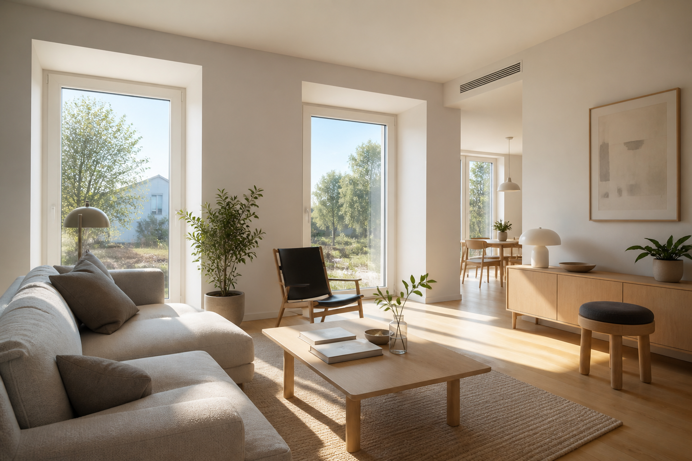

This week’s Passive House sweep
- The Faircliff wins Phius Best Overall
- New Hope takes the single-family prize
- Other Phius winners
- Hillside North NYSERDA award
- Maryland IRA rebates still pending
- DC heat pump rebates open

ExtraReach is still in the planning stage. This week’s sweep (roughly October 5–12) is led by the Passive House Institute US (Phius) 2026 Passive Projects Design Competition, announced around PhiusCon, where two climate zone 4A projects took top honors.
The Faircliff in DC wins Best Overall at the Phius design awards
What's new: On Oct 12, Phius (Passive House Institute US) named The Faircliff in Washington, DC, both Best Overall Project and Affordable Housing Winner in its 2026 Passive Projects Design Competition. The winners were revealed at PhiusCon 2026 in Phoenix (Oct 8–10). Only fully certified projects could enter.
The Faircliff is an eight-story, 125-unit, all-affordable, all-electric apartment building at 2641 14th Street NW in Columbia Heights. It was developed by Somerset Development Company, Jonathan Rose Companies, and Housing Up. Eric Colbert & Associates was the architect and John Moriarty & Associates was the contractor. All units serve households at or below 60% of area median income (AMI), including 36 units at 50% AMI or below and 9 at 30% AMI or below. The mix is 46 one-bedroom, 40 two-bedroom, and 39 three-bedroom apartments.
It got Phius CORE 2021 design certification on Nov 30, 2022, and final certification in 2026. It is also LEED (Leadership in Energy and Environmental Design) Platinum. From the Phius project database:
- Climate zone 4A (mixed-humid), the same as most of Virginia and Maryland
- About 118,447 sq ft of conditioned floor area
- Site energy use intensity (EUI) of 19.9 kBtu/ft²·yr
- Measured airtightness of 0.064 CFM50/ft² of enclosure
Other green features include a 67 kW solar array built into a green roof, electric vehicle (EV) charging for 19 parking spaces, and carbon-injected concrete. DC Green Bank put in a $1.85 million loan to help the project earn its certifications.
Why it matters: This is a certified, award-winning Passive House in our own climate zone. And it's affordable housing paid for with tax credits, the kind of project where people often say Passive House is too expensive.
When someone says Passive House can't work at scale or on an affordable budget in the Mid-Atlantic, point to 14th Street NW.
Sources: Phius release (PR Newswire / PRWeb) · Phius certified project database · Somerset Development · Somerset certification release (PDF) · Jonathan Rose Companies · DC Green Bank
New Hope Passive House takes the single-family prize
What's new: New Hope Passive House in New Hope, Pennsylvania, won the Single-Family category in the same Phius competition. It earned Phius ZERO 2024 certification, with design certification on July 15, 2025 and final certification on Aug 21, 2026. Construction wrapped up in 2025.
It's a 4,149 sq ft all-electric home in Phius climate zone 4A, built on a former farm inside a large conservation area. It's designed around a central courtyard to bring in daylight all day.
- Architect: Studio Modh Architecture
- Builder and developer: Hanson Fine Building & Preservation
- Mechanical design: J+M Engineering
- Certified Passive House Consultants (CPHCs): Shannon Pendleton and Ryan Abendroth
- Phius rater: Scott Pusey
- Site energy use intensity (EUI): 14.21 kBtu/ft²·yr, or −1.04 counting its solar, so it makes more energy than it uses over a year
- Home Energy Rating System (HERS) score: 48, or 10 counting solar
- Notable features: aluminum-clad wood windows (ENERsign Primus), recycled-glass gravel insulation under the footings, and a sedum green roof with built-in solar panels
Why it matters: It's a certified net-zero home in our climate zone, about three hours from DC. And it shows that Passive House can look like warm modern architecture, not a plain box.
Phius ZERO is a realistic goal for a custom home in zone 4A. Pairing the airtight, well-insulated shell with solar on the roof is what gets you there.
Sources: Phius release (PR Newswire / PRWeb) · Build Zero Consulting certification note · Studio Modh on Archinect · Phius certified project database
Other Phius winners from Brooklyn to Santa Rosa
What's new: The other winners were 369 Warren St in Brooklyn (Retrofit), Beach Green Dunes III in Far Rockaway (Best Project by a Young Professional), Leland House in Waltham, MA (Low-Rise Multifamily), 2147 Washington Street in Roxbury, MA (High-Rise Multifamily), MiNet0-1 in Grand Rapids, MI (Source Zero), and Fountaingrove Residence in Santa Rosa, CA (Regional Recognition).
Why it matters: Most of the winners are multifamily or retrofit projects. That shows where certified passive building is growing fastest.
For Northeast multifamily and retrofit examples, this list is a good place to start.
Source: Phius release (PR Newswire / PRWeb)
Hillside North in Queens earns a NYSERDA Building of Excellence award
What's new: On Oct 8, the New York State Energy Research and Development Authority (NYSERDA) gave a Building of Excellence award to Hillside North in Jamaica, Queens. It's a 14-story building with 173 affordable units and rooftop solar, from Gilbane and MURAL. It is designed to meet the Passive House Institute (PHI) Classic standard. It's still at the design stage and isn't certified yet.
Why it matters: New York keeps putting money behind large affordable Passive House buildings. Its programs are often a preview of where Mid-Atlantic incentives go next.
This one is worth watching, but don't call it certified until it is.
Source: NYSERDA announcement
Maryland IRA home rebates still waiting on DOE
What's new: Nothing has changed this week. The Maryland Energy Administration (MEA) says it sent updated applications for its Inflation Reduction Act (IRA) Home Energy Rebate programs on Sep 30. The two programs are Homeowners Managing Energy Savings (HOMES) and High-Efficiency Electric Home Rebates (HEEHR). The applications are still waiting on review by the US Department of Energy (DOE). The programs aren't live, and MEA hasn't published amounts or a launch date.
Why it matters: Homeowners keep asking when they can use these rebates. For now there's no date to give them.
Plan Maryland projects around the EmPOWER utility programs, and keep an eye on MEA's page.
Source: MEA IRA rebates page
DC heat pump rebates open for the new fiscal year
What's new: The DC Sustainable Energy Utility (DCSEU) opened its fiscal 2027 residential rebates on Oct 1. They range from $250 to $5,000 for heat pumps and heat pump water heaters.
Why it matters: These rebates are available now and help pay for the equipment at the heart of an all-electric, Passive House-style retrofit.
If you're helping DC homeowners electrify, apply early in the fiscal year.
Source: DCSEU residential rebates